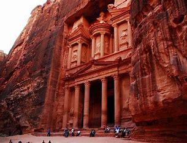
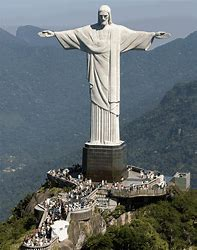
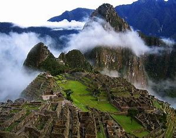
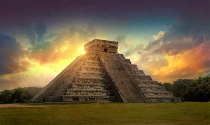
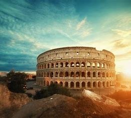
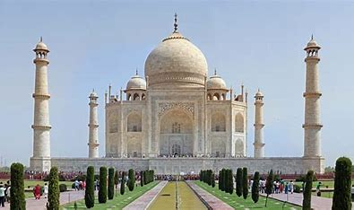

LAS 7 MARAVILLAS DEL MUNDO
1. La Gran Muralla China (China)
Una imponente fortificación construida para proteger las fronteras del Imperio Chino.
Se extiende por miles de kilómetros y es conocida por sus torres de vigilancia y murallas de piedra y tierra.

2. Petra (Jordania)
Una antigua ciudad nabatea esculpida en la roca arenisca roja.
Es famosa por su arquitectura única y sus tumbas y templos tallados directamente en las montañas.

3. Cristo Redentor (Brasil)
Una enorme estatua de Jesucristo situada en la cima del Cerro del Corcovado en Río de Janeiro.
Con una altura de 30 metros, ofrece vistas panorámicas de la ciudad y es un símbolo de paz y bienvenida.

4. Machu Picchu (Perú)
Una ciudad inca ubicada en la cima de los Andes. Es conocida por su arquitectura
y urbanismo avanzado, además de sus impresionantes vistas y la misteriosa historia detrás de su construcción.

5. Chichén Itzá (México)
Un complejo arqueológico maya que incluye la pirámide de Kukulkán (también conocida como El Castillo).
Este sitio es famoso por sus conocimientos astronómicos y su arquitectura monumental.

6. El Coliseo (Italia)
Un antiguo anfiteatro romano situado en Roma. Es uno de los ejemplos más emblemáticos
de la ingeniería romana y fue el escenario de numerosos espectáculos, incluidos combates de gladiadores.

7. La Taj Mahal (India):
Un mausoleo de mármol blanco construido por el emperador Shah Jahan en memoria
de su esposa Mumtaz Mahal. Es famoso por su impresionante arquitectura y jardines, y es considerado una obra maestra del arte islámico.
